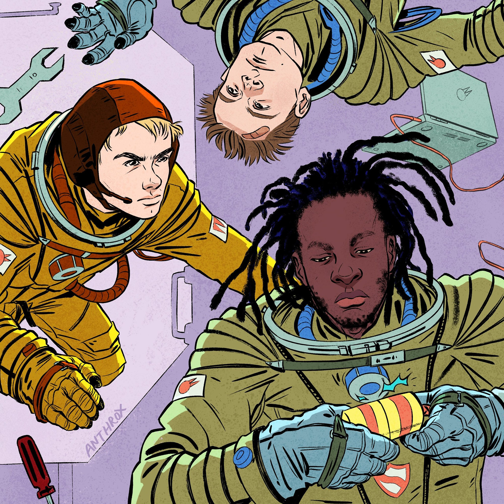

black midi — Cavalcade

Description
The world's best Slint tribute act.
Ingredients
- The best drummer the world's ever seen
- One strapping young lad with incredible dexterity on the bass
- David Byrne's son
Steps
- Throw em all in a room
- Wait until they make the best noisy post-punk record of recent memory
- Wait one more year
- Your "black midi — Cavalcade" will be ready, fresh out of the oven
- Enjoy a genre-transcending post-avant-garde jazz fusion album that's so good King Crimson wishes they would've made it
return home